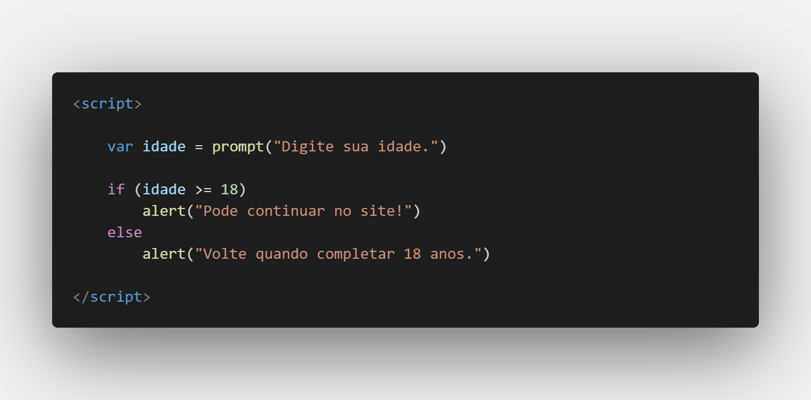
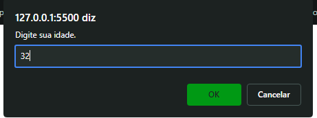
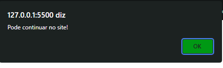
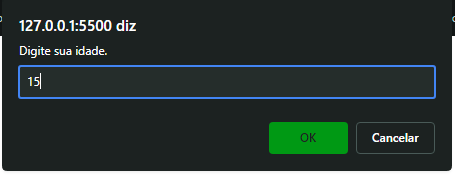
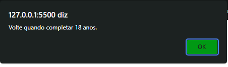
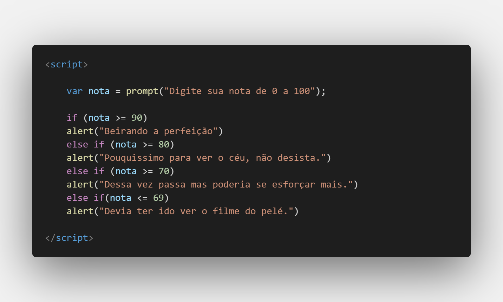

Aula 13/26 - Condicionais IF
No JavaScript, as condicionais if e else são usadas para controlar o fluxo de execução do código com base em condições. Elas permitem que você tome decisões e execute diferentes blocos de código dependendo de se uma determinada condição é verdadeira ou falsa.
Aqui está a estrutura básica das condicionais if e else em JavaScript:
if (condição)
{// Código a ser executado se a condição for verdadeira}
else (opção caso o retorno seja falso)
{// Código a ser executado se a condição for falsa}
Como primeiro exemplo o caso de um site que pergunte se o usuário é ou não maior de 18 anos.





Aqui estão os passos básicos de como isso funciona:
A expressão dentro dos parênteses após if é avaliada. Se a expressão for verdadeira, o bloco de código dentro das chaves {} logo após o if será executado. Se a expressão for falsa, o bloco de código dentro das chaves {} após o else (se houver) será executado.
O bloco de código dentro das chaves {} contém as instruções que serão executadas se a condição correspondente for verdadeira ou falsa, dependendo se é um bloco if ou um bloco else.
Você também pode ter várias condições usando else if, que é útil quando você tem mais de duas possibilidades a serem avaliadas:

Neste exemplo, o código avalia a variável nota e atribui uma letra de nota com base em diferentes intervalos de pontuação.